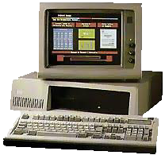

A mis primos:
Muchas personas conocen las computadoras IBM, o... las conocían. Esas computadoras viejitas que funcionaban con diskettes y solo corrian
en DOS (Disk Operating System). Eran muy obsoletas esas cosas, de por sí, siento que las personas que conocieron esas cajas amarillentas
tuvieron más facilidad para aprender lenguajes de programación, ya que con DOS empezaban con un lenguaje que ahora se usa con cmd
(Símbolo del Sistema) y por supuesto, es el lenguaje BATCH. En otras computadoras como la Apple II y la Commodore 64 usaban el
muy obsoleto lenguaje BASIC.
Yendo al tema principal de este cuento... pues, después de la salida de la IBM XT286 5162, a un par de ingenieros en sistemas se les ocurrió
una idea:"Qué pasaría si combinaramos tecnología de IBM y de Silicon Graphics?". Obviamente su idea era crear una máquina potente capaz
de correr un sistema operativo con una GUI (Interfaz Gráfica de Usuario) Hecha de PUROS gráficos en 3D. Obviamente, tenía que ser:
O los gráficos más ligeros, o más potente la máquina para que no se congelara o estallara en llamas.

IBM XT286
En cuanto a todo eso, pues, ellos ya habiendo tenido experiencia en cuanto a diseñar computadoras, empezaron con su trabajo.
Diseñaron la IBM SLC_CMA con un disco duro de 500 MB (obviamente NO agregarían uno de 500 GB o de 1 TB, por que aparte de que no las
soportan, ni siquiera existían :v), 64 MB de RAM (Memoria de Acceso Aleatorio), un procesador de 16 MHz, y un monitor con altavoces integrados
que por alguna extraña razón, usaron las entradas de video y audio RCA, cuando pudieron haber usado, no se, ¿entrada VGA y plug de 1/8? io k c :v.
Se me pasó decir que también añadieron una unidad de diskettes, pues claro porque, era el unico formato extraible en ese entonces. Y pues, ya llegó el momento
de empezar a programar el sistema operativo, al cual le llamaron "sld0S" y como dije hace un rato, tenía una GUI de Gráficos 3D, lo cual provocaba que
la máquina necesitara potencia extra para ejecutar los gráficos 3D. Las primeras versiones eran un poco lentas al renderizar los modelos.
La realidad es que el modo en el que los gráficos funcionaban, era con imagenes pre-renderizadas, lo cual hacia creer a la gente que eran gráficos 3D con la
clásica resolución de pantalla que tenían esas computadoras. PERO revisando claramente ahora con las famosas máquinas virtuales, se nota que
son modelos pre-renderizados. Pero igual, pues, como cualquier otra computadora, tienen fallas, y se descomponen.
En otro capítulo hablare más concretamente sobre el sistema operativo en sí.